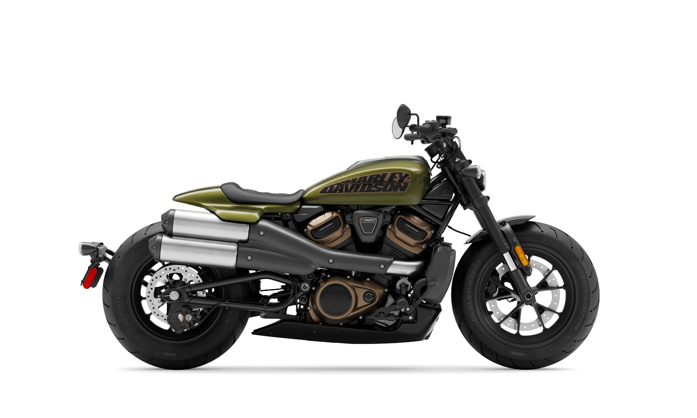
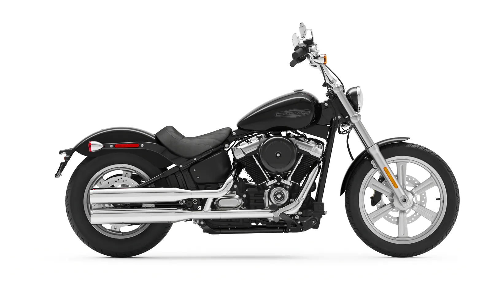
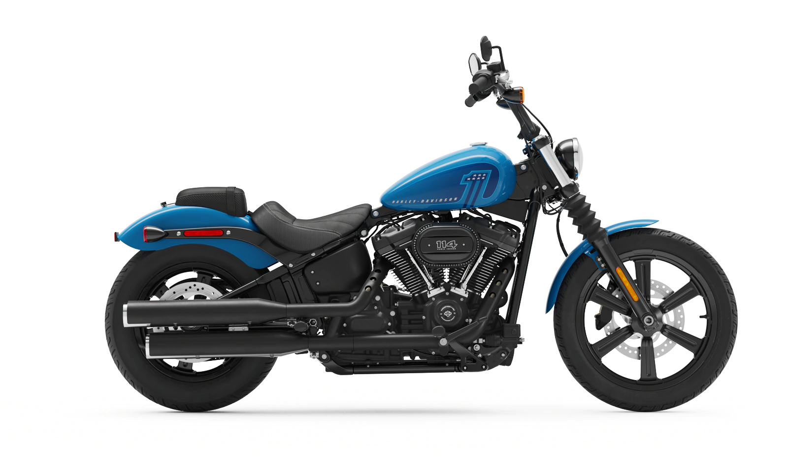
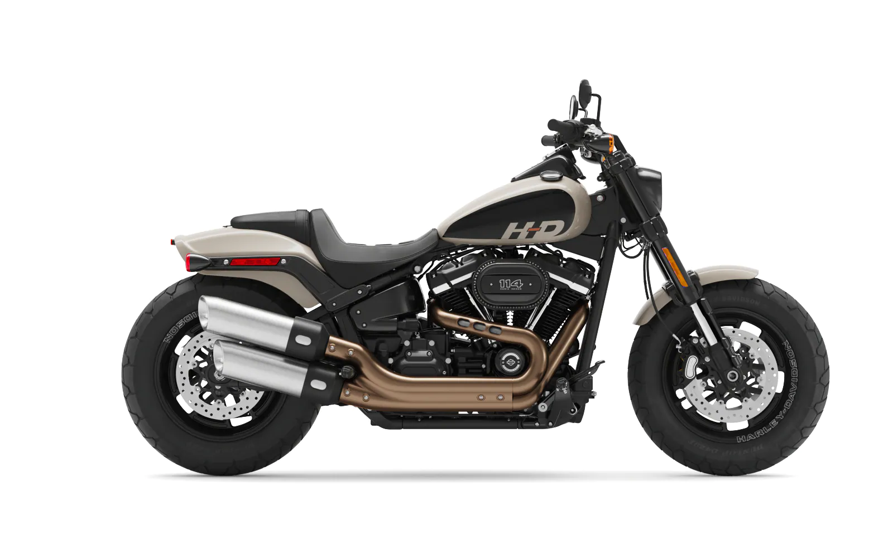
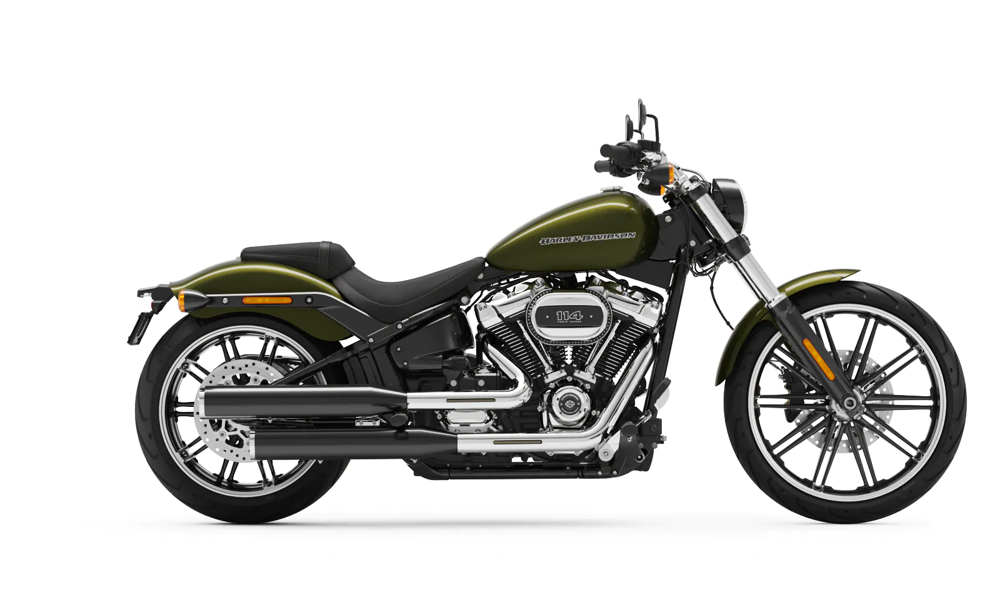
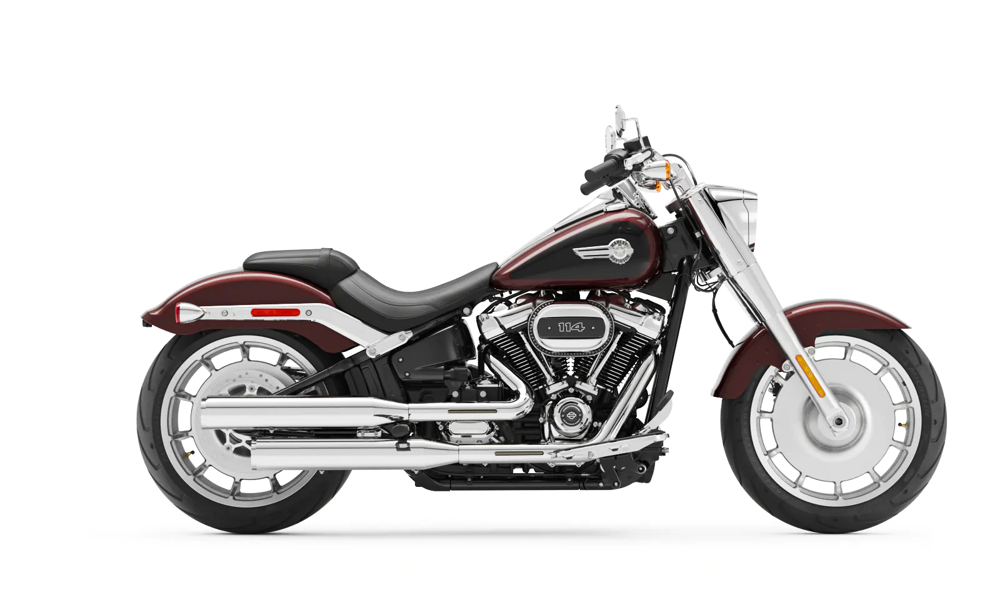
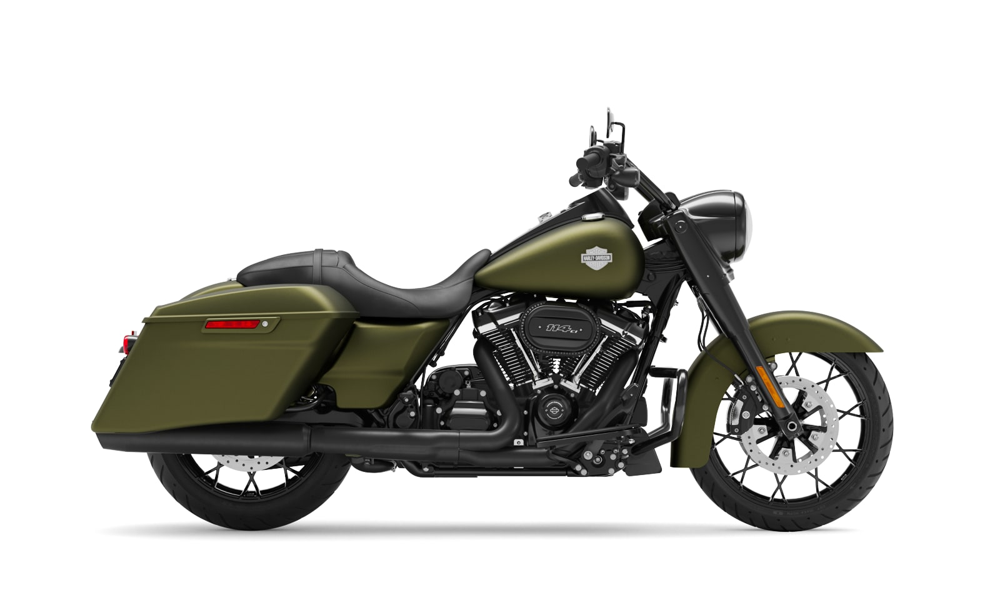
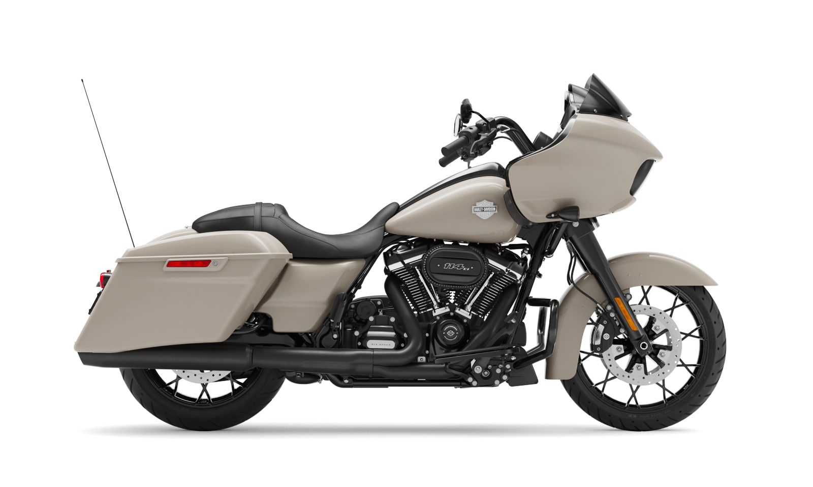
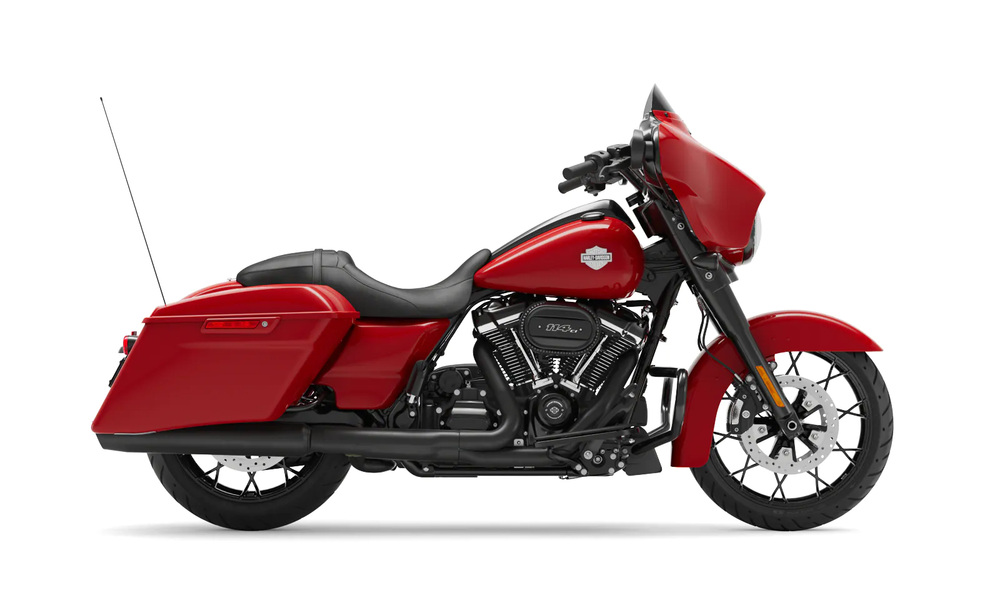
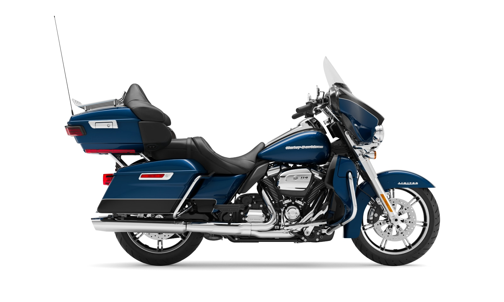

About
BrothersHD merupakan sebuah showroom motor gede (Moge) yang berdiri sejak 22 Februari 2022, tepatnya di desa konoha. Pada awalnya BrothersHD hanya menjual 2 buah sepeda motor bebek, namun seiring berjalannya waktu BrothersHD berkembang dengan pesat. Bahkan sejauh ini BrothersHD sudah berhasil menjual ribuan motor. Saat ini BrothersHD hanya fokus menjual satu merk motor saja. Salah satu merk motor dengan harga yang cukup tinggi, tidak lain dan tidak bukan yaitu Harley Davidson
Jenis Motor
Sport
Sebuah kategori yang diciptakan oleh Sportster yang disegani. Desain ikonis, suara autentik. Ini adalah motor yang dibangun untuk menggilas jalanan gunung, dan melesat di atas jalanan kota.

Nightster
Motor Harley-Davidson® Nightster™ adalah babak berikutnya dalam legasi Harley-Davidson Sportster™ - sebuah lompatan ke depan dari segi performa dan desain yang dibangun dengan landasan yang dimulai sejak 65 tahun lalu.

Sportster S
Sportster S adalah babak pertama dari kisah Sportster saga lengkap yang benar-benar baru. Sebuah legasi yang lahir pada tahun 1957 dan melampaui performa pesaing kini dibangun kembali untuk mendobrak standar masa kini.
Cruiser
Warisan autentik bertemu teknologi modern untuk tenaga, gaya, dan pengalaman berkendara yang murni – di sekitar kota atau sepanjang jalanan desa.

Softail Standard
Dengan tampilan serba hitam dan polos berprofil legendaris.

Street Bob
Gaya ban kekar dengan hantaman berat dilengkapi tangki kacang ikonis dan postur bulldog.

Fat Bob
Gaya bobber polos nan autentik. Kanvas kosong yang bisa disesuaikan sesuaikan hati.

Breakout 114
Cruiser performa kustom pabrik dalam tampilan serba hitam.

Fat Boy
Bobber polos nan gagah dalam balutan warna hitam. Basis performa sempurna untuk kustomisasi.
Grand American Touring
Kategori yang kami ciptakan dari bawah. Menempuh perjalanan panjang dengan bergaya. Jelajahi dunia luas terbuka dan kebebasan jiwa di atas motor yang hanya mampu dibangun oleh Harley-Davidson.

Road King Special
Gaya legendaris dalam kemasan bagger juara performa, dengan desain fairing serba baru dan mesin Milwaukee Eight™ 117 yang dahsyat.

Roda Glide Special
Kombinasi agresif dari kelincahan berkendara dan touring jarak jauh.

Street Glide Special
Raja jalanan yang haus tenaga. Dibangun dengan gaya kokoh dan performa.

Ultra Limited
Ikon kustom gemuk orisinal, kini dengan sentuhan akhir krom